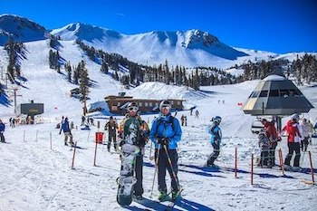

Mammoth Lakes, California
Situated about 5 hours north of Los Angeles, this charming mountain town has much to offer during all seasons of the year. People come from far and wide to enjoy fishing, skiing and snowboarding, shopping, and even good eats. With scenic views in every direction, it's no wonder that this small town is becoming more popular for a relaxing getaway.
Whether you're looking to slow down and unwind, or embark on exciting adventures, Mammoth is the place to be!
About Mammoth Lakes, California
| Population | 8,169 (2019) |
|---|---|
| Geographic Size of Town | 25.31 mi² |
| Summer Average Temp (°F) | 75° |
| Winter Average Temp (°F) | 40° |
| Visitors Per Year | 2.8 Million |
| Elevation | 7,881 Feet Above Sea Level |
| Visitors Per Year | 2.8 Million |
Seasonal Activites In and Around Mammoth
Depending on what season it is when you visit, there are many different things to do. Listed below are just a few highlights for each time of year.
Winter
Hit the Slopes for Skiing & Snowboarding
The winter time brings excellent conditions for skiers and snowboarders each year.

Summer
Fishing Season
The summer months are a peak season for trout fishing in the many beautiful lakes and rivers.
Fall

Enjoy the Fall Colors
The changing leaves are a picture perfect backdrop for the numerous outdoor activities available.
Popular Attractions
There are many beautiful sights to see and places to visit when exploring Mammoth Lakes.
Devils Postpile National Monument

It's a short 0.8 mile hike to see this interesting rock formation.
Rainbow Falls
The trail from Devils Postpile takes you on a 2.5 mile hike to an overlook of the waterfall. It's a refreshing place to stop and swim after the long hike as well.
The Minaret Vista
This is a beautiful lookout during the daytime, and a prime spot for stargazing once the sun goes down.
Wild Willy's Hot Spring
Essentially a natural hot tub, these pools are the perfect place to relax and enjoy the mountain views.
The Village
Located in town, The Village is a lively spot filled with shops, restaurants, music, and even a convenient gondola station which takes you to the top of Mammoth Mountain.